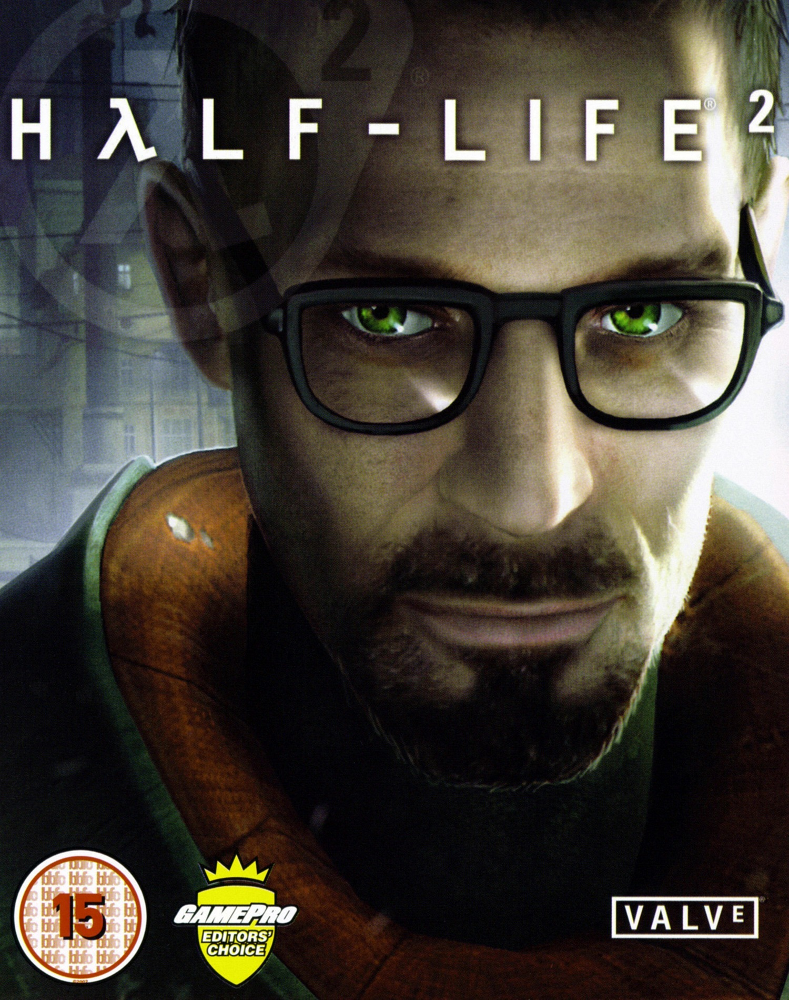

|
 |
Название: Half-Life 2 Год выпуска: Ноябрь 2004 Версия / Билд: Retail Build 2187 (Protocol 6) Движок: Чистый старый Source (Old Engine) Особенности движка: Полный распрыг (баннихоп), нет лимита скорости, оригинальное освещение 2004 года. Таблетка: Не требуется (Распакованная No-Steam копия) |